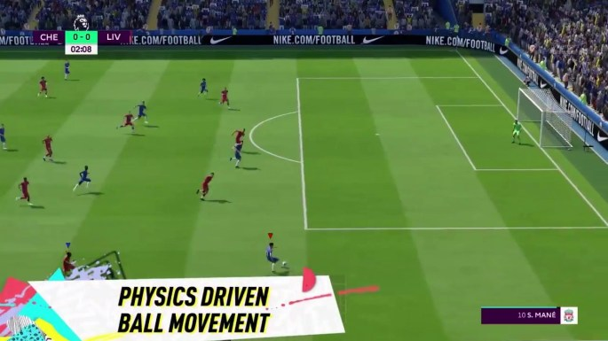

FIFA 20 es un videojuego de simulación de fútbol del año 2020 disponible
para Microsoft Windows, PlayStation 4, Xbox One y Nintendo Switch el 9
de octubre de 2020, y aparte es el primer videojuego de la serie FIFA
para Google Stadia, PlayStation 5 y Xbox Series X|S.
El juego es la 27 entrega de la serie de videojuegos de FIFA.
El jugador Francés Eden Hazard fue elegido para ser la portada del FIFA 211
y como embajadores estarán Trent Alexander-Arnold, Erling Braut Haaland y
João Félix.2
Como FIFA 21 sale en octubre y las consolas de próxima generación salieron
a fin de año, este FIFA tendrá una Doble Versión que será para que quienes
compren el FIFA 21 en PlayStation 4 o Xbox One, no tengan que volver a
comprarlo en PlayStation 5 o Xbox Series X|S.

OBSERVA EL SIGUIENTE VIDEO